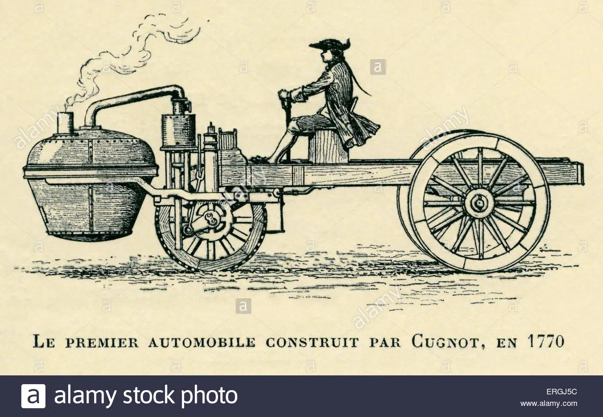
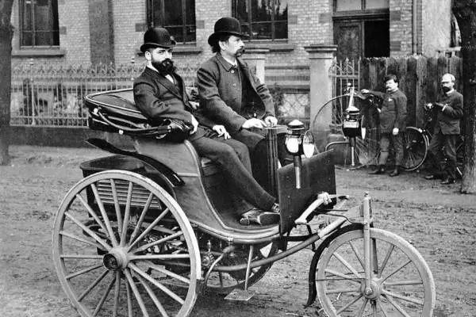
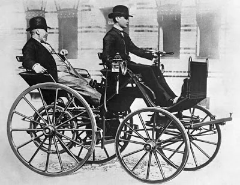

Início de Tudo
Antes de tudo, no exterior os registros são até mais antigos, por volta de 1700. O fato é que de lá até os dias atuais, muita coisa mudou nos automóveis. E é justamente sobre a evolução dos carros, que nós vamos falar hoje.
A cada lançamento que chega no mercado, sempre nos surpreendemos com novas tecnologias. Carros híbridos, elétricos, inteligentes e tantos outros, já fazem parte do dia a dia de muitos. Mas nem sempre foi assim.
Nicolas Joseph Cugnot – 1769
Um dos primeiros registros de um “carro” vem de Nicolas Joseph Cugnot, um inventor francês que, em 1769, criou um veículo movido a vapor, com o objetivo de transportar equipamentos militares. O veículo pesava cerca de 2,5 toneladas e era movido por uma caldeira de vapor, tornando-se um dos primeiros conceitos de transporte motorizado.
Sobretudo, naquele período o objetivo ainda não era carregar pessoas, e sim equipamentos de artilharia de guerra. Os humanos só puderam contar com esse conforto por volta de 1769, quando algumas modificações foram feitas. Entre elas a criação do motor a vapor.
Karl Benz – 1885
Depois de alguns anos da criação de Cugnot, no ano de 1885 finalmente um veículo foi fabricado com fins comerciais. A criação era do alemão Karl Benz, e dentre as novidades o veículo contava com três rodas e um motor a gasolina.
Além disso, Outro fato curioso sobre o carro, é que seu sistema de arranque era a manivela. Já pensou se fosse assim nos dias atuais?
A partir desse período muitas criações com novas tecnologias começaram a ser desenvolvidas. Ou seja, a evolução dos carros, começava a tomar forma.
Gottlieb Daimler – Ano de 1886
Gottlieb Daimler foi outro alemão que deixou seu nome marcado na história automobilística. No ano de 1886, ele inovou e apresentou ao mundo o primeiro automóvel com motor a combustão interna. O veículo podia chegar a marca de 16 km/h.
